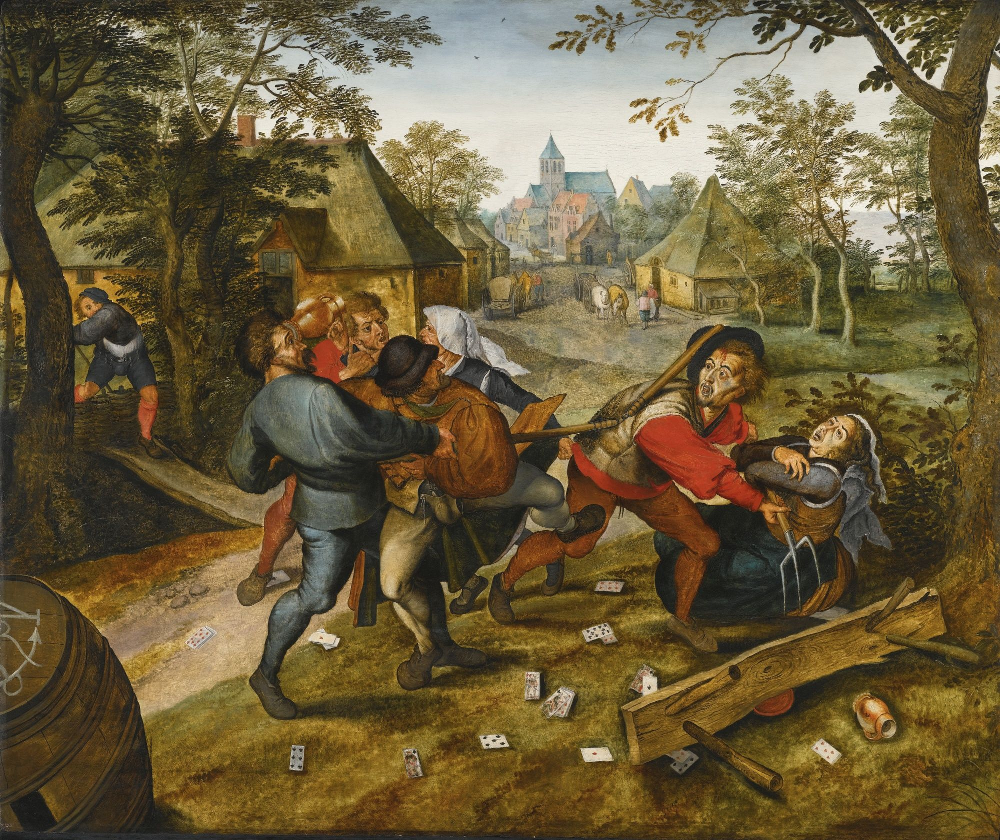

Ore 18.00 - Bruegel illustra
Riscoperta ludica e creativa dei giochi medioevali attraverso l'opera del pittore Pieter Bruegel intitolato "La piazza dei giochi dei bambini"
Last updated 10/06/2024

Ore 18.00 - La vetrata gotica
Dalle bellissime vetrate gotiche comparse in Francia tra il 1100 e 1300, illustrando la metodologia usata da questi artigiani, produrremo un manufatto in cartoncino e carta velina.
Last updated 10/06/2024